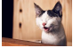

label

top of a surfboard
sitting on a window sill
a bird in the water
Inspired by the idea of internet image memes, this work introduces a novel automated meme clip generation system. The system follows a probabilistic approach to generate a meme clip for any given image using the ClipMe architecture. For a given image, a caption is extracted by a attention-based deep-layer LSTM model that aids in the generation of a meme by combining a meme template image and a meme caption employing an encoder-decoder model. This meme is mapped to suitable audio to form the meme clip. The quality of the generated meme clip is assessed through both automated and human evaluations.
As depicted in Fig 1, the model first generates a meaningful caption for the given input image. This caption is fed into the meme template selection module that selects the best match meme template for the input caption. The selected meme template and the image caption then acts as an input for Meme Caption Generator that generates a funny meme caption. The funny meme caption is embedded in the meme template to create the final meme embedded with a humorous audio matching the meme caption. The following table shows a few demonstrations of the output of the ClipMe architecture.
| Input image | Caption | Meme template label |
Meme Clip Link |
|---|---|---|---|
|
a man riding a wave on top of a surfboard |
Stoner Stanley | |
|  | a black and white cat sitting on a window sill |
Awkward Seal | |
| a close up of a bird in the water |
you don’t say meme |